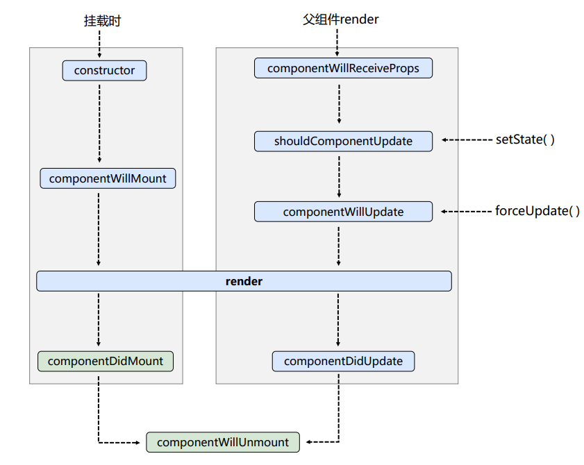

009-react的生命周期
1、旧版本的生命周期(react17.0.0以前的)
react所拥有的声明周期
- 首次挂载
触发: constructor - componentWillMount - render - componentDidMount
- 通过setState改变状态
触发: shouldComponentUpdate - componentWillUpdate - render - componentDidUpdate
shouldComponentUpdate能控制更不更新视图，当shouldComponentUpdate()=false的时候，就不更新视图了，后面的生命周期也就不会触发。
当
shouldComponentUpdate()=false的时候，视图虽然不会更新，但js内存内的变量还是改了
class App extends React.Component {
state = {
age: 1
}
// 返回false不更新视图
shouldComponentUpdate () {
return false;
}
change = () => {
this.setState({age: this.state.age+1}); // setState调用，视图不会更新
console.log(this.state.age); // 但js中的age变量还是会变
}
render () {
return (
<div>
<h1>Hello{this.state.age}</h1>
<button onClick={this.change}>更新</button>
</div>
)
}
}
- 通过forceUpdate强制重新渲染
触发: componentWillUpdate - render - componentDidUpdate
既然叫强制，那就没有类似
shouldComponentUpdate这种可以控制更新不更新的生命周期了
当触发
forceUpdate()，react会重新拿state里面的最新状态去更新
class App extends React.Component {
state = {
age: 1
}
change = () => {
this.state.age += 1; // 这里仅仅改变js中的age变量，不会触发render
this.forceUpdate(); // 强制触发render，会用age的最新的值去渲染
}
render () {
return (
<div>
<h1>Hello{this.state.age}</h1>
<button onClick={this.change}>更新</button>
</div>
)
}
}
4、父组件触发render
无论父组件是因为什么原因，触发了父组件的render后，子组件会触发下面的生命周期: componentWillReceiveProps - shouldComponentUpdate - componentWillUpdate - render - componentDidUpdate
可以这么记住，只要父组件触发render，就会重新渲染子组件，那就触发componentWillReceiveProps和一系列更新的生命周期。和父组件传不传props、props有没有更新都没有关系
componentWillReceiveProps在父组件第1次挂载触发
render()的时候，不会触发，当挂载后父组件触发render()才会触发
// 子组件
class Son extends React.Component {
// 父组件并没有传递props过来，但是当父组件改变state触发render后
// 子组件的componentWillReceiveProps也会触发
componentWillReceiveProps (props) {
console.log('son-componentWillReceiveProps', props);
}
render () {
return (
<div>
<h1>this is Son Component: {this.props.age}</h1>
</div>
)
}
}
// 父组件
class App extends React.Component {
state = {
age: 1
}
change = () => {
this.setState({age: this.state.age+1});
}
render () {
return (
<div>
<h1>Hello{this.state.age}</h1>
<Son></Son>
<button onClick={this.change}>更新</button>
</div>
)
}
}
2、新版本的生命周期
改动点:
componentWillMount/componentWillUpdate/componentWillReceiveProps几个带will（除了componentWillUnmont）的生命周期要加前缀UNSAFE_。命名为UNSAFE_componentWillMount/UNSAFE_componentWillUpdate/UNSAFE_componentWillReceiveProps
我们是推荐直接不使用者3个生命周期了
- 新增2个生命周期:
getDerivedStateFromProps / getSnapshotBeforeUpdate
3、新旧生命周期对比图
旧的生命周期图:

新的生命周期图: